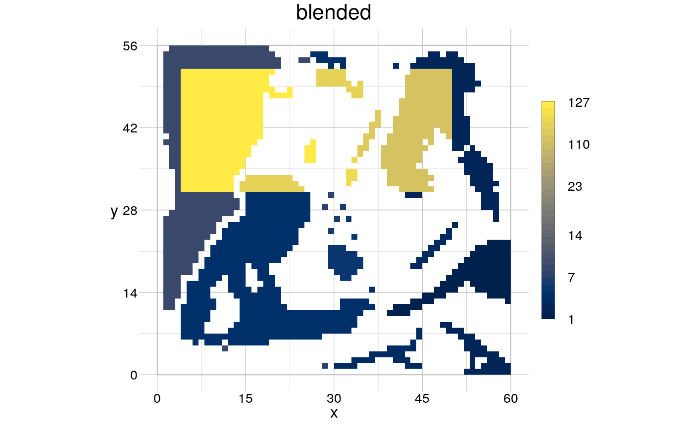

Blend two rasters simply by adding (and weighing) their values per cell.
rBlend(obj, overlay, patches = FALSE, weight = 1)
| obj | [ |
|---|---|
| overlay | [ |
| patches | [ |
| weight | [ |
A RasterLayer of the same dimension as primary, in
which an overlay has been blended with the primary raster.
In case patches = TRUE, the cells in the overlay are grouped
according to the foreground patches in the primary raster and all cells of
this group are assigned their common average, then the blend is carried
out.
A blend operation currently is defined as 'overlay*weight + obj'. To
aggregate more than two RasterLayers with arbitrary functions, see
rReduce.
Other operators to modify a raster: rReduce,
rRescale, rSegregate
# define primary raster ... input <- rtData$continuous patches <- rPatches(rBinarise(input, thresh = 30)) # ... and an overlay from a matrix m <- matrix(nrow = 56, ncol = 60, data = 0) m[c(5:25), c(5:50)] <- 10 mask <- raster::raster(m, xmn=0, xmx=60, ymn=0, ymx=56, crs=NA) # blend while considering patches in the primary raster blended <- rBlend(patches, overlay = mask, patches = TRUE) visualise(raster::stack(patches, blended))